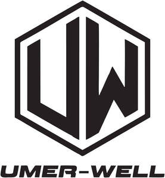

Trade Mark Journal No.2025/041 10 October 2025
UK00004272746 2 October 2025 (18,25,28)

- Class 18
- Horse bridles; Horse saddles; Horse halters; Bridles for horses; Horse collars; Harness for horses; Saddle cloths for horses; Pads for horse saddles; Saddles (Pads for horse -); Blinkers for horses [blinders for horses]; Bridles [harness]; Covers for horse saddles; Horse cloths; Blinkers for horses; Horse rugs; Horse bits; Horse blankets; Cribbing straps for horses; Horse tail wraps; Riding saddles; Horse sheets; Knee-pads for horses; Horse leg wraps; Saddlecloths for horses; Horse covers; Headbands for horses; Horse fly sheets; Equine boots; Bits for horses; Bridles [harnessing]; Ear bonnets for horses; Reins [harness]; Blankets for horses; Halters; Saddle cloths; Stirrup leathers; Leathers (Stirrup -); Saddlery; Riding whips; Training leads for horses; Horse quarter sheets; Saddlery, whips and apparel for animals; Fly masks for horses; Blinkers [harness]; Saddle blankets; Saddlery of leather; Saddle belts; Saddle trees; Fastenings for saddles; Spats and knee bandages for horses; Straps of leather [saddlery]; Girths of leather; Equine leg wraps; Stirrup straps; Harness for animals; Blinders [harness]; Saddle pads; Reins; Spur straps; Bits for animals [harness]; Lead reins; Hoof guards; Bits for animals; Saddle covers; Cloths for saddles; Shoulder belts [straps] of leather; Straps (Leather shoulder -); Stirrups; Stirrups of metal; Stirrups (Parts of rubber for -); Parts of rubber for stirrups.
- Class 25
- Karate suits; Judo suits; Taekwondo suits; Aikido suits; Suits; Gym suits; Swimming suits; Karate uniforms; Training suits; Swim suits; Jogging suits; Shirts for suits; Warm-up suits; Dress suits; Suits (Bathing -); Bathing suits; Sailor suits; Ski suits; Flying suits; Body suits; Ski suits for competition; Romper suits; Skirt suits; Leather suits; Suits of leather; Leisure suits; Dinner suits; Play suits; Men's suits; Jump Suits; Motorcycle rain suits; Sweat suits; Union suits; One-piece suits; Pram suits; Running Suits; Jumper suits; Rain suits; Snow suits; Motorcycle riding suits; Clothing for wear in judo practices; Wind suits; Judo uniforms; Track suits; Evening suits; Women's suits; Shell suits; Taekwondo uniforms; Suit coats; Three piece suits [clothing]; Bathing suit cover-ups; Down suits; Ladies' suits; Waterproof suits for motorcyclists; Aikido uniforms; Suits made of leather; Martial arts uniforms; Yoga pants; Tuxedo belts; Sports pants; Yoga shirts; Clothing for martial arts; Jogging outfits; Horse-riding pants; Boxing shoes; Boxing shorts; Clothing for wear in wrestling games; Warm up suits; Sports clothing [other than golf gloves]; Clothing for gymnastics; Clothes for sport; Tennis dresses; Yoga shoes; Jogging pants; Skating outfits; Dress pants; Combative sports uniforms; Jackets being sports clothing; Clothes for sports; Tennis shirts; Golf clothing, other than gloves; Motorcycle gloves; Riding trousers; Breeches; Riding boots; Walking breeches; Riding jackets; Riding gloves; Riding Gloves; Riding shoes; Breeches for wear; Horse-riding boots; Motorcyclist boots; Snowboard trousers; Pantaloons; Hunting pants; Motorcycle jackets; Trousers of leather; Ski trousers; Sports jerseys and breeches for sports; Leather pants; Trousers; Polo boots; Cycling shorts; Chaps (clothing); Boxer shorts; Shorts; Gym shorts; Rugby shorts; Tennis shorts; Trousers shorts; Golf shorts; Boy shorts [underwear]; Shorts [clothing]; American football shorts; Clothing for horse-riding [other than riding hats]; Hunting vests; Running vests; Vest tops; Vests; Fleece vests; Vests (Fishing -); Wind vests; Quilted vests; Cycling pants; Wind-resistant vests; Sports vests; Camouflage vests; Down vests; Men's and women's jackets, coats, trousers, vests; Scrimmage vests; Long sleeved vests; Cycling Gloves; Snowboard jackets; Hunting jackets; Ski pants; Walking shorts; Athletics vests; Driving gloves; Padded pants for athletic use; Ski jackets; Ski wear; Clothing for cycling; Wind pants; Fleece shorts; Snowboard gloves; Fleece jackets; Walking boots; Padded shorts for athletic use; Waterproof boots for fishing; Padded jackets; Sleeveless jackets; Hunting boots; Hiking boots; Leather jackets; Snowboard boots; Quilted jackets [clothing]; Boots for sport; Windproof jackets; Knit jackets; Exercise wear; Cycling shoes; Leggings [trousers]; Maternity leggings; Leggings [leg warmers]; Pants; Capri pants; Tights; Moisture-wicking sports pants; Jogging bottoms [clothing]; Trekking boots; Athletic tights; Snow pants; Warm-up pants; Stretch pants; Maternity pants; Woollen tights; Men's dress socks; Cycling tops; Waterproof pants; Jodhpurs; Trousers for sweating; Camouflage pants; Denim jeans; Snowboard shoes; Leather dresses; Swim shorts; Bib shorts; Jogging shoes; Denim jackets; Hiking shoes; Driving shoes; Jeans; Ski boots; Cargo pants; Weatherproof pants; Yoga socks; Skiing shoes; Yoga bottoms; Footless tights; Shoes for casual wear; Jogging bottoms; Jogging tops; Rain trousers; Shirts; Polo shirts; Sport shirts; Hunting shirts; Golf shirts; Short-sleeved shirts; Dress shirts; Long-sleeved shirts; Short-sleeve shirts; Sports shirts; Fishing shirts; Soccer shirts; Turtleneck shirts; Collared shirts; Short-sleeved T-shirts; Casual shirts; Sports shirts with short sleeves; Open-necked shirts; Football shirts; Sweat shirts; Jerseys [clothing]; T-shirts; Rugby shirts; Knit shirts; Night shirts; Camouflage shirts; Maternity shirts; Padded shirts for athletic use; Woven shirts; Shirt yokes; Yokes (Shirt -); Clothing for cyclists; Shirts and slips; Under shirts; Pique shirts; Sleep shirts; Sleeveless jerseys; Tee-shirts; Mock turtleneck shirts; Golf trousers; Triathlon clothing; Shirt fronts; Denim pants; Jackets (Stuff -) [clothing]; Stuff jackets [clothing]; Party hats [clothing]; Sleeved jackets; Jackets; Wind jackets; Sports jackets; Rain jackets; Safari jackets; Suede jackets; Wind-resistant jackets; Warm-up jackets; Rainproof jackets; Heavy jackets; Waterproof jackets; Blouson jackets; Fur jackets; Track jackets; Bomber jackets; Casual jackets; Weatherproof jackets; Down jackets; Sweat jackets; Long jackets; Camouflage jackets; Dinner jackets; Bed jackets; Fur coats and jackets; Wind resistant jackets; Stuff jackets; Shell jackets; Reversible jackets; Polar fleece jackets; Light-reflecting jackets; Gilets; Ski hats; Short overcoat for kimono (haori); Japanese kimonos; Yoga tops; Tops; Tracksuit tops; Tops [clothing]; Tube tops; Baselayer tops; Halter tops; Warm-up tops; Crop tops; Rugby tops; Baby tops; Polo knit tops; Knit tops; Fleece tops; Knitted tops; Bottoms [clothing]; Baselayer bottoms; Tracksuit bottoms; Pajama bottoms; Gym boots; Sweat bottoms; Belts [clothing]; Belts for clothing; Waist belts; Leather belts [clothing]; Belts of textile; Suspender belts for women; Suspender belts for men; Money belts [clothing]; Suspender belts; Garter belts; Sports wear; Clothing for leisure wear; Leisure wear; Tennis wear; Maternity wear; Headgear for wear; Ladies wear; Casual wear; Swim wear for children; Surf wear; Formal wear; Bridesmaids wear; Head wear; Face masks [fashion wear] ; Rain wear; Infant wear; Sashes for wear; Athletic clothing; Dresses for evening wear; Jogging sets [clothing]; Clothing for sports; Sports clothing; Children's wear; Formal evening wear; Dance clothing; Training shoes; Leisure clothing; Sport shoes; Athletic shoes; Sports shoes; Athletic footwear; Footwear not for sports; Gymnastic shoes; Sports garments; Shoes for leisurewear; Trainers [footwear]; Headbands [clothing]; Wristbands [clothing]; Headbands for clothing; Footwear for sports; Sports footwear; Sports jerseys; Sports bras; Sports socks; Sports headgear [other than helmets]; Sports singlets; Sports over uniforms; Sports bibs; Moisture-wicking sports bras; Footwear for sport; Footwear for use in sport; Articles of sports clothing; Sports caps and hats; Sports [Boots for -]; Sport coats; Evening wear; Athletic uniforms; Athletics footwear; Athletics shoes; Football shoes; Sports caps; Bras; Strapless bras; Bra straps [parts of clothing]; Straps for bras; Sports overuniforms; Sport stockings; Football jerseys; Rugby jerseys; Walking shoes; Fabric belts; Fabric belts [clothing]; Belts made of leather; Gloves; Sliding shorts; American football pants; Tennis socks; Tennis pullovers; Gloves for apparel; Sweat-absorbent underwear; Sweat pants; American football socks; Basketball shoes; Boots for sports; Short trousers; Baseball shoes; Rugby boots; Football boots; Studs for football boots; Men's underwear; Sweatshorts; American football shirts; Sweatpants; Men's socks; Hooded sweat shirts; Tank-tops; Trunks [underwear]; Pirate pants; Men's sandals; Basketball sneakers; Sleeveless pullovers; Underwear; Rugby shoes.
- Class 28
- Karate kick pads; Taekwondo kick pads; Kick pads for martial arts; Karate shin pads; Karate gloves; Karate target pads; Swimming kick boards; Punching balls [for boxing practice]; Kick boards; Punching balls for boxing; Taekwondo mitts; Protective paddings for Taekwondo; Shin guards for soccer; Shin guards for sports use; Shin guards for athletic use; Protective face masks for use in the sport of fencing; Archery arm guards; Athletic protective arm pads for skating; Sparring gloves; Shin pads for sports use; Soccer ball knee pads; Shin pads for athletic use; Arm guards for sports use; Athletic protective arm pads for cycling; Kendo wooden swords; Punching bags for boxing; Chest protectors for athletic use; Knee guards for sports use; Gauntlets [for fencing]; Punching balls; Leg guards adapted for playing sport; Protective vests for martial arts; Chest pads for American football; Knee guards for athletic use; Chest protectors for sports use; Leg pads for American football; Body protectors for American football; Athletic protective elbow pads for skating; Athletic protective elbow pads for cycling; Athletic protective knee pads for skating; Protectors for elbows for use when participating in the sport of cricket; Toy ninja weapons; Boxing gloves; Shin guards; Wrist guards for athletic use; Instep guards for athletic use; Arm guards for baseball; Face guards for sports use; Shin guards [sports articles]; Leg guards [cricket pads]; Pommel horses [for gymnastic]; Leg weights for athletic use; Athletic protective knee pads for cycling; Punching bags; Inflatable punching bags; Swivels for punching bags; Punching toys; Gloves (Boxing -); Bowling bags; Bag stands for golf bags; Boxing rings; Golf bags; Bags for fishing; Cricket bags; Soccer ball bags; Golf bag tags of leather; Lacrosse ball bags; Bags for skateboards; Bowls bags; Football gloves; Gloves for sports; Handball gloves; Swimming gloves; Baseball gloves; Gloves (Baseball -); Golfing gloves; Belts for weightlifting; Golf gloves; Gloves (Golf -); Gloves for golf; Gloves (Fencing -); Fencing gloves; Hockey gloves; Water-skiing gloves; Gloves for water-skiing; Badminton equipment; Apparatus for use in training for the game of rugby [sporting equipment]; Football equipment; Sports equipment; Fencing equipment; Martial arts training equipment; Sports equipment for pets; Swimming equipment; Volleyball equipment; Sports training apparatus; Billiard equipment; Fishing equipment; Sleds [recreational equipment]; Leg weights for sports training; Sporting articles and equipment; Skateboards [recreational equipment]; Gymnastics (Appliances for -); Appliances for gymnastics; Bags adapted to hold fencing equipment; Paintball guns [sports apparatus]; Epee [fencing weapons]; Racing lanes [swimming equipment]; Gym chalk for improving hand grip in sports activities; Indoor fitness apparatus; Paintballs [sports apparatus]; Belts (Weight lifting -) [sports articles]; Body protectors for sports use; Shin pads; Shin pads for use in sports; Shin pads [sports articles]; Knee pads for sports use; Knee pads for athletic use; Athletic protective wrist pads for skateboarding; Pads for use in sports; Pads for ice hockey goalkeepers; Shoulder pad elastic for athletic use; Shoulder pad lacelocks for athletic use; Hand pads for sports use; Focus pads for martial arts; Wrist straps for weightlifting; Knee guards [sports articles]; Bags adapted for bowling balls; Kendo masks; Pommel horses; Vaulting horses; Rocking horses; Rocking horses on metal frames; Waterski rope bridles; Waterski bridles; Exercise treadmills; Swimming belts; Waist trimmer exercise belts; Fitness exercise machines; Fitness steppers; Weight lifting belts [sports articles]; Weight lifting belts; Back supports [belts] for weightlifters; Water rowing machines for fitness purposes; Exercise pulleys; Bowling gloves; Softball gloves; Lacrosse gloves; Billiard gloves; Batting gloves; Gloves for games; Batting gloves [accessories for games]; Baseball mitts; Visors for toy helmets; Kendo plastrons; Athletic protective wrist pads for cycling; Supporters (Men's athletic -) [sports articles]; Men's athletic supporters [sports articles].
UMER WELL LTD